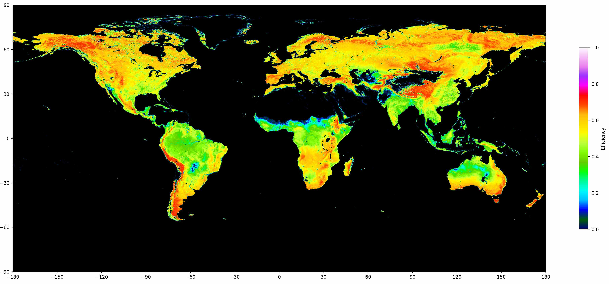
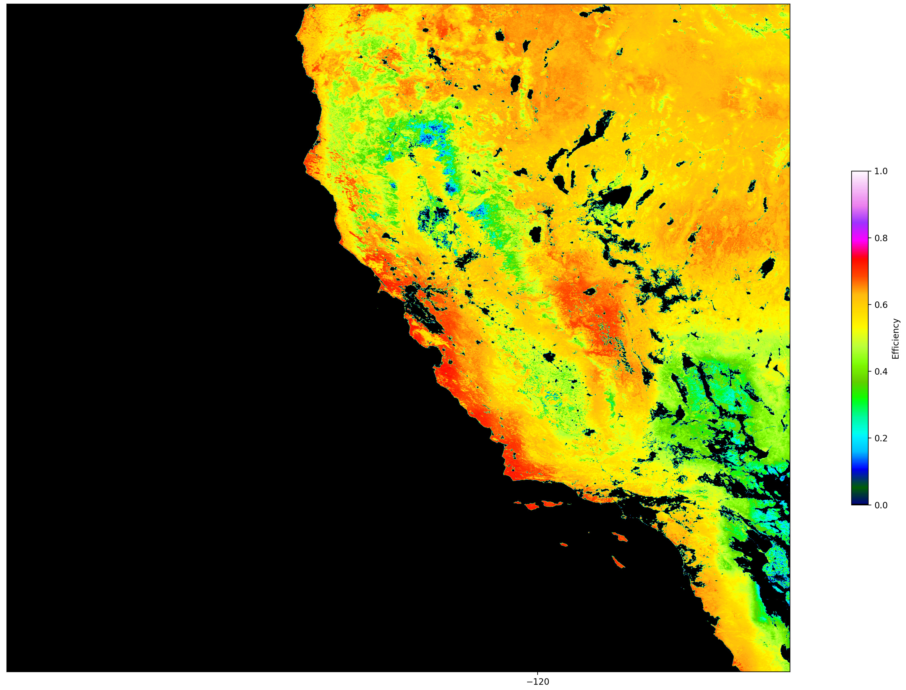
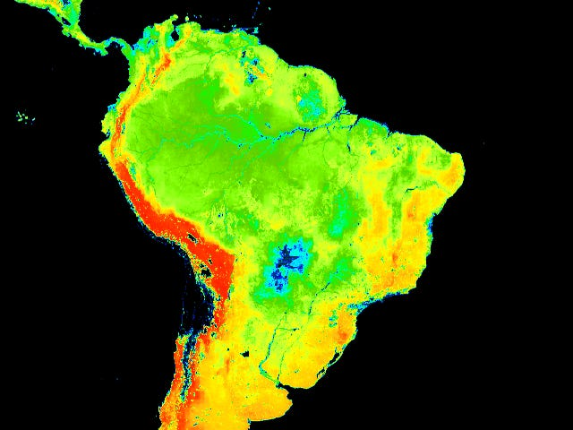
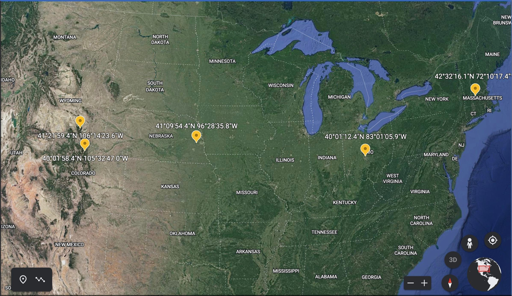
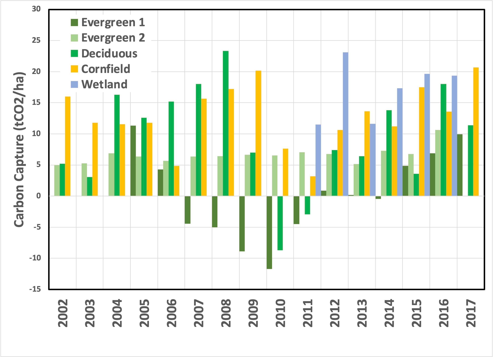

For the past couple of issues, I’ve focused on two questions:
-
In any given area, are trees the best use of the land for carbon sequestration?
-
Does it matter what is planted?
To answer the first one, last time, I described the process for determining the net productivity of an area of land, the “NPP,” from satellite data. This measurement combines light spectrum data with a carbon capture model to determine how much carbon is retained in a given area. So, let’s convert this into a unitless storage efficiency ratio (Net ÷ Gross). That ratio will be a rough measurement of the percentage of carbon retained in a growing season. If all of the carbon is retained, the ratio will be one, and if none of it is, then the ratio will be zero. Since some areas capture no carbon at all (GPP = 0), we can set all of those to zero.
These measurements are publicly accessible if somewhat buried and complicated to analyze. I’ve extracted and analyzed them without the objective of publishing my findings in a prominent journal, so there’s no “spin”. Here it is:

[NOTE: The origin and processing of these datasets are described in an earlier installment. 1 The code and data are freely available on request.]
The picture reveals the unexpected. The highest efficiency of carbon retention appears to be associated with mountainous terrain, including low gross productivity areas like Alaska and Siberia (note the bright red areas ~70% efficiency). At the same time, the equatorial rainforests in Brazil and Indonesia are only half as efficient. The place I’m most familiar with, California, looks like this:

It certainly appears that the coastal forests of Big Sur are more efficient than the Central Valley. San Francisco Bay shows areas of high efficiency surrounded by regions of no capture, which correspond to urbanized areas. If you zoom in, it’s even possible to pick out Golden Gate Park!
South America is particularly revealing:

If the satellite-related model accurately reflects reality, then the rainforest captures a lot of carbon but then releases more than other ecosystems. Unfortunately, this doesn’t answer the question of “Are trees best?" although it suggests that rainforests' frequently-revered ability to retain carbon is overrated. That makes intuitive sense to me: Rainforests are vibrant ecosystems with plenty of visible biomass and can suck carbon out of the atmosphere like nowhere else on earth. But adding extra water to the rainforest probably results in more decomposition. So while carbon capture is still water-related, there are diminishing returns. But, of course, that’s my speculation. It’s not based on direct observation.
As a further caveat, these measurements are based on models, which invariably fall short of reality. But, from the processing algorithm I described the last time 2 , observations of forests (mainly deciduous forests, those that periodically lose their leaves) are modeled to have more respiration unrelated to leaf area. This feature leads to a more significant model-based “correction” to the annualized NPP from observed data. So, if anything, forests are being undercounted.
To get to the crux of these questions, we need a data source closer to ground level that can measure carbon flux directly. That’s where “Eddy Flux Covariance” comes in. I mentioned this method in the last installment and thought I’d focus this issue on it. The technique is still valuable and provides an enormous amount of high-resolution data (sampling ten times a second over years!). But I haven’t had the time to dig into it as deeply as I’d like, so I’m punting it to next week.
To whet your appetite, you should applaud an international compilation of Eddy Flux Covariance data called FLUXNET that has compiled and standardized readings in many different locations over several years. This is the localized version of what Dave Keeling started to look into decades ago 3 and is a worthy successor to his legacy.
As I described last time, this method simultaneously measures air’s directional flow (flux) and its composition. If some carbon is absorbed or released, then when air flows down, it has a different CO2 level than when it flows up. But it doesn’t rely on measuring light. Instead, CO2 is measured directly. This measurement includes both photosynthesis and respiration, not only by the plant itself (which would estimate NPP) but also by the surrounding life that uses the energy captured by the plant. This “ground truth” underpins the empirical models used by the MODIS satellites. The difference is subtle, but measuring CO2 over days, weeks, months, and years allows direct measurement of a much more relevant quantity called Net Ecosystem Efficiency (NEE). NEE measures which ecosystem, cropland or forest, will retain the most carbon.
As an appetizer for the next issue, I downloaded five data sets that should address this issue, from four different ecosystems, within the latitude range of 40°-43°N, covering stations based in the US. I chose two pine forests in Colorado, 4 a cornfield in Nebraska (irrigated) 5 , a deciduous forest in Massachusetts 6 , and wetlands in Ohio 7 .

The data includes annualized NEE for each site, which will help guide the comparison. What we see is this:

As a general observation, in most years, more carbon is captured than released, which is good for controlling the atmosphere's composition. In a typical cornfield, a lot of that carbon is harvested and used by humans, a loss that Eddy Flux Covariance would not measure. But, the conclusion it’s not crystal clear. The data isn’t available for all years, and even the two pine forests differ, with some years showing net carbon release.
So, what’s going on with the net release in geographically similar pine forests? According to the Forest Service (which operates the Evergreen 1 site), “In the late 2000s, a spruce beetle outbreak caused the mortality of most of the mature Engelmann spruce trees….” If you’ve seen the eastern slope of the Rockies outside Denver, then you’ll know firsthand about “ beetle kill ”. 8
I could go on speculating, but (as always) you should think for yourself. For comparison, next time, I’ll look at daily data for 2015 to see if we can find an answer to these questions.
Until next time.
Thank you for reading Healing the Earth with Technology. This post is public, so feel free to share it.

US-NR1 ( Niwot Ridge Forest (LTER NWT1) ) and US-GLE (Glacier Lakes Ecosystem Experiments Site)
Thanks to Will Regan for the following academic reference, entitled “ California’s forest carbon offsets buffer pool is severely undercapitalized. ” This article further describes how Nature laughs at our attempts to manage atmospheric carbon dioxide with economics rather than engineering.